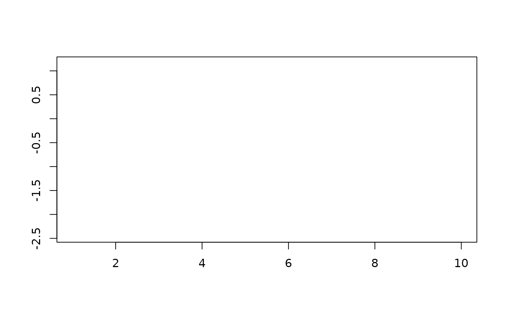
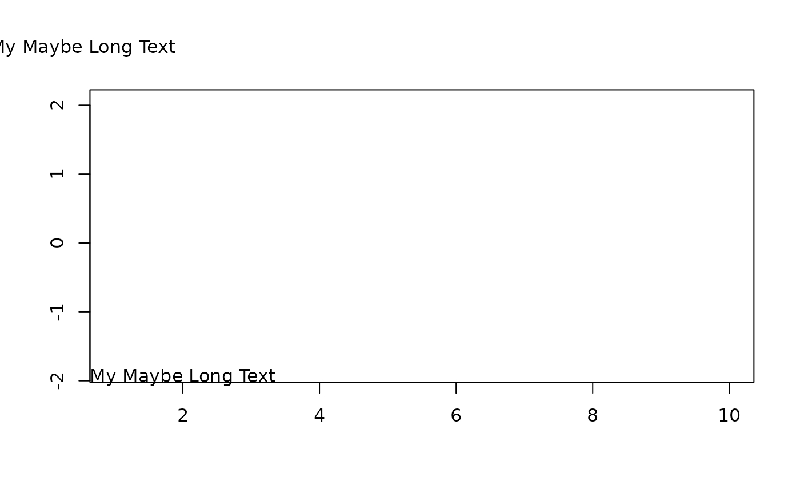

Coordinates for "bottomright", etc.
ABCCoords.RdReturn the xy.coordinates for the literal positions "bottomright", etc. as used to place legends.
ABCCoords(x = "topleft", region = "figure", cex = NULL, linset = 0, ...)
Arguments
| x | one out of |
|---|---|
| region | one out of |
| cex | the character extension for the text. |
| linset | line inset in lines of text. |
| ... | the dots are passed to the |
Details
The same logic as for the legend can be useful for placing texts, too. This function returns the coordinates for the text, which can be used in the specific text functions.
Value
nothing returned
Author
Andri Signorell <andri@signorell.net>
See also
Examples
# note that plot.new() has to be called before we can grab the geometry ABCCoords("bottomleft")#> $xy #> $xy$x #> [1] -0.8287469 #> #> $xy$y #> [1] -3.399057 #> #> $xy$xlab #> NULL #> #> $xy$ylab #> NULL #> #> #> $adj #> [1] 0 0 #>#> [[1]] #> [[1]]$xy #> [[1]]$xy$x #> [1] -0.8287469 #> #> [[1]]$xy$y #> [1] -3.399057 #> #> [[1]]$xy$xlab #> NULL #> #> [[1]]$xy$ylab #> NULL #> #> #> [[1]]$adj #> [1] 0 0 #> #> #> [[2]] #> [[2]]$xy #> [[2]]$xy$x #> [1] -0.8287469 #> #> [[2]]$xy$y #> [1] -0.724658 #> #> [[2]]$xy$xlab #> NULL #> #> [[2]]$xy$ylab #> NULL #> #> #> [[2]]$adj #> [1] 0.0 0.5 #> #>text(x=(xy <- ABCCoords("bottomleft", region = "plot"))$xy, labels = "My Maybe Long Text", adj = xy$adj, xpd=NA)text(x=(xy <- ABCCoords("topleft", region = "figure"))$xy, labels = "My Maybe Long Text", adj = xy$adj, xpd=NA)sapply(c("topleft", "top", "topright", "left", "center", "right", "bottomleft", "bottom", "bottomright"), function(x) text(x=(xy <- ABCCoords(x, region = "plot", linset=1))$xy, labels = "MyMarginText", adj = xy$adj, xpd=NA) )#> $topleft #> NULL #> #> $top #> NULL #> #> $topright #> NULL #> #> $left #> NULL #> #> $center #> NULL #> #> $right #> NULL #> #> $bottomleft #> NULL #> #> $bottom #> NULL #> #> $bottomright #> NULL #>xy <- ABCCoords("topleft", region = "plot") par(xpd=NA) BoxedText(x=xy$xy$x, y=xy$xy$y, xpad = 1, ypad = 1, labels = "My Maybe Long Text", adj = xy$adj, col=SetAlpha("green", 0.8))